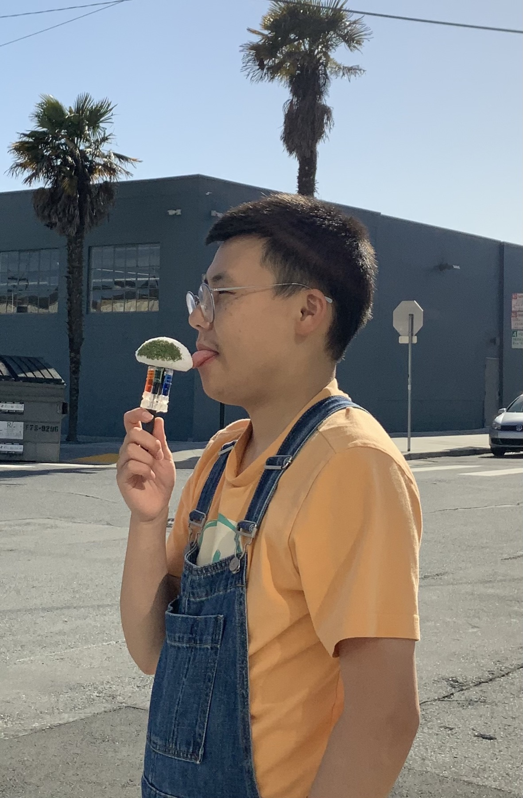
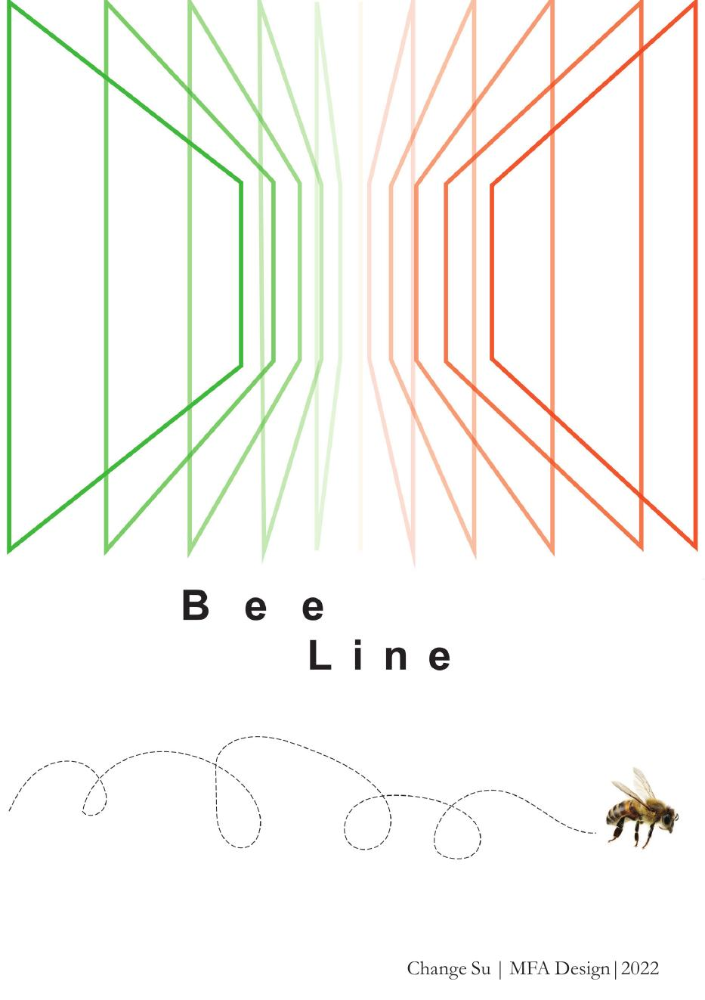
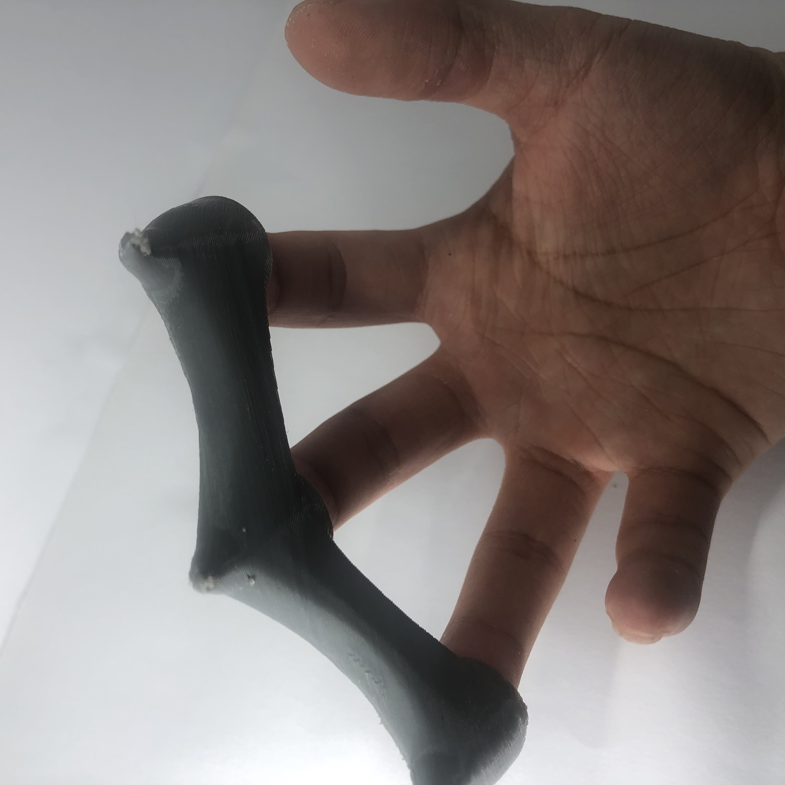
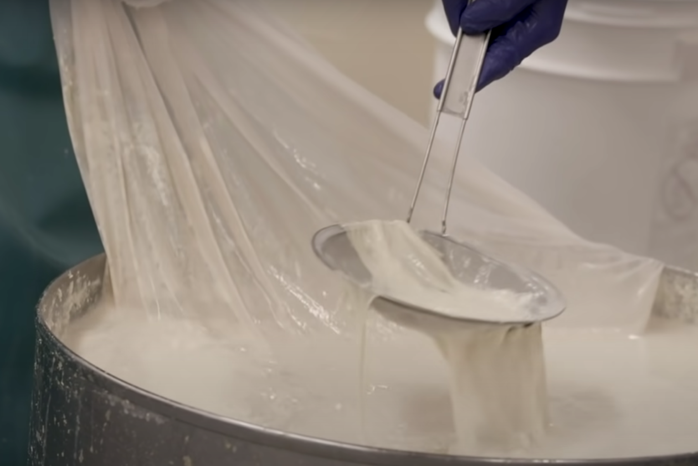
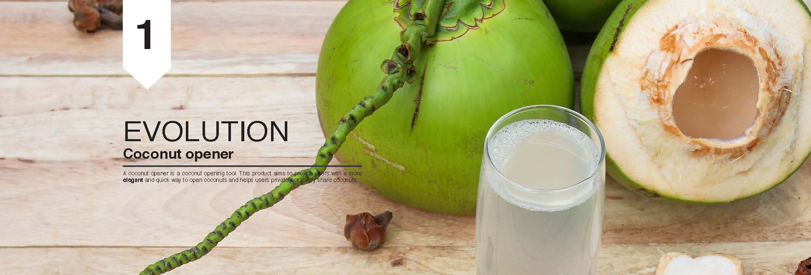
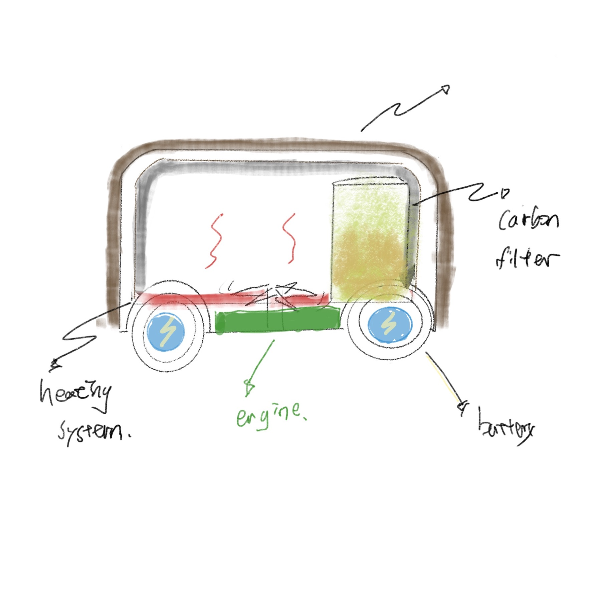
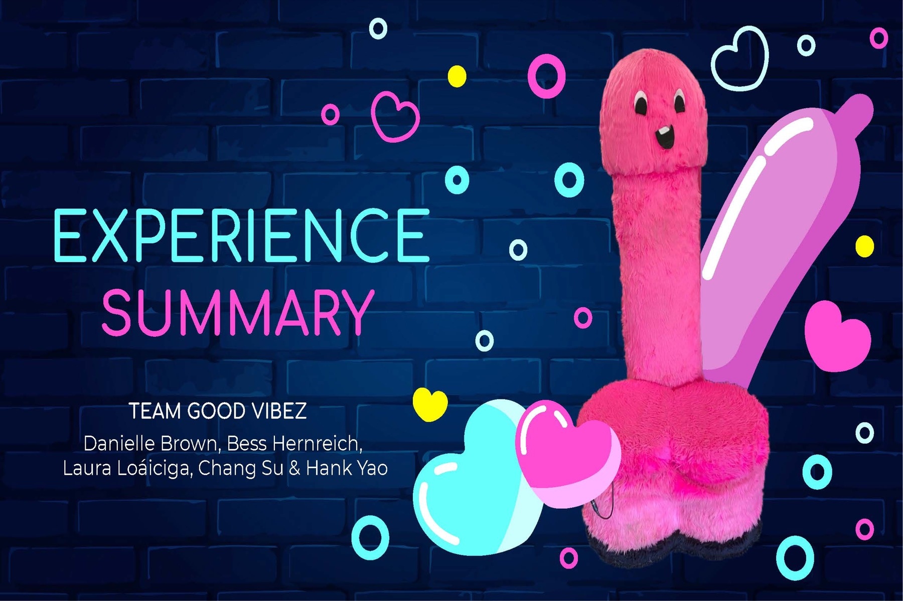
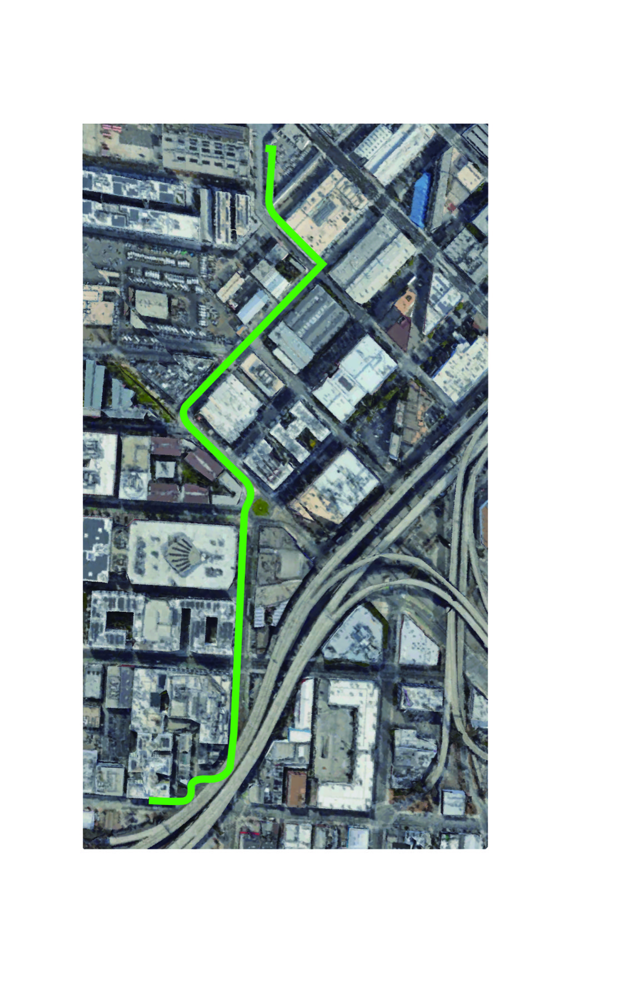

Industrial designer · Design researcher
Designing new relations between humans, technology, and the more-than-human world.
I’m Chang Su, a product and industrial designer with experience at HUAWEI, DiDi, and VR startups. My design practice has involved a wide range of products and emerging technologies, including smartphones, PCs, VR/XR glasses, and electric folding bicycles. My academic interests focus on the relationships between humans, emergent technologies. I primarily use Research through Design as a way to explore these relationships.

Selected work · 2019—2024
Practice as inquiry.

Who Is Our Navigation?
Reimagining wayfinding through non-human senses to question how GPS reshapes perception, agency, and movement.
DiDi Designated Driving
A folding e-bike system improving safety, battery endurance, and the daily workflow of designated drivers.

Wild Hybrid
Plant-like body extensions explore climbing, adaptation, and non-anthropocentric approaches to making.

Eating the Future
Tofu, okara, material experiments, and fictional dining rituals question how food becomes culture, waste, and technology.

Industrial Design Assembles
A continuous visual archive of selected industrial-design projects, following the original Notion sequence.

Human & Robot
Explorations of robotic agency, care, environment, and everyday coexistence through speculative prototypes.

Good Vibez Pop-up
A private, inclusive retail experience shaped through mixed-method research, journey mapping, and service prototyping.
HUAWEI Health Phone
Health-function interaction design connecting personal monitoring with home, work, and travel scenarios.
HUAWEI Smartphone P-70
Form and ergonomic studies integrating a one-inch sensor and a seven-millimeter camera rise.
HUAWEI Digital Power
A scalable product-family language across solar, storage, charging, and partner environments.
HUAWEI Power Bank
A premium rapid-charging product developed through specification, three concepts, and production refinement.
HUAWEI Tri-Fold Phone
Second-generation studies balancing thinness, weight, folding order, grip, and stylus-enabled work.
HUAWEI Wireless Charge
A concise case focused on placement, feedback, and a frictionless relationship between device and surface.
Research direction
Beyond user-centered design.
How might designed objects reveal—and renegotiate—the hidden relationships between human behavior, emerging technology, and non-human actors?
My research uses Research through Design to make abstract technological relations tangible. Drawing on psychogeography, Object-Oriented Ontology, Actor–Network Theory, and posthumanism, I construct artifacts and situations that invite people to sense familiar systems differently.

About
Chang Su is an industrial designer and researcher working across products, systems, and speculative situations.
Educated at California College of the Arts (MFA) and Beijing Institute of Technology (BA), Chang brings professional product-development experience into an inquiry-led design practice.
Experience
HUAWEI
DiDi
VR / XR startups
Domains
Smartphones & PCs
VR / XR glasses
Mobility products
Research
Human–technology relations
More-than-human design
Research through Design